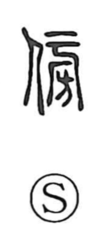

傍

Uncategorized
Kun: katawara, soba | On: bou, hou
by the side ・ beside ・ nearby ・ alongside ・ neighborhood
Explanation
A phono-semantic character: the person radical 亻 indicates a human in relation to something, while 旁 provides the sound and suggests meaning. The form 旁 itself combines 凡, “broad, widespread,” with 方, “the four sides or directions,” evoking the surrounding sides and nearby environs. The Shuowen glosses it as “close,” and from this notion of the neighborhood it comes to mean the side or vicinity, and by extension the act of drawing close and the relation of being by or along something.